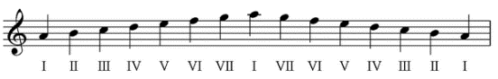
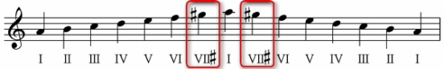
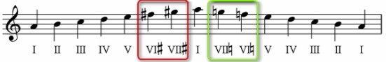

3 ВИДА МИНОРА: ПЕРВЫЙ — НАТУРАЛЬНЫЙ
Натуральный минор – это простая гамма без всяких случайных знаков, в таком виде в каком она есть. Учитываются только ключевые знаки. Звукоряд этой гаммы один и тот же при движении и вверх, и вниз. Ничего лишнего. Звучание – простое, немного строгое, печальное. Вот, например, что представляет собой звукоряд натурального ля минора:
3 ВИДА МИНОРА: ВТОРОЙ — ГАРМОНИЧЕСКИЙ
Гармонический минор – в нём при движении и вверх, и вниз повышается седьмая ступень (VII#). Повышается она не с бухты-барахты, а ради того, чтобы обострить её тяготение в первую ступень (то есть в тонику). Давайте посмотрим на звукоряд гармонического ля минора:
3 ВИДА МИНОРА: ТРЕТИЙ — МЕЛОДИЧЕСКИЙ
Мелодический минор – это минор, в котором при движении гаммы вверх повышаются сразу две ступени – шестая и седьмая (VI# и VII#), зато при обратном (нисходящем) движении эти повышения отменяются, и играется (или поётся) фактически натуральный минор. Вот пример мелодического вида того же ля минора:
